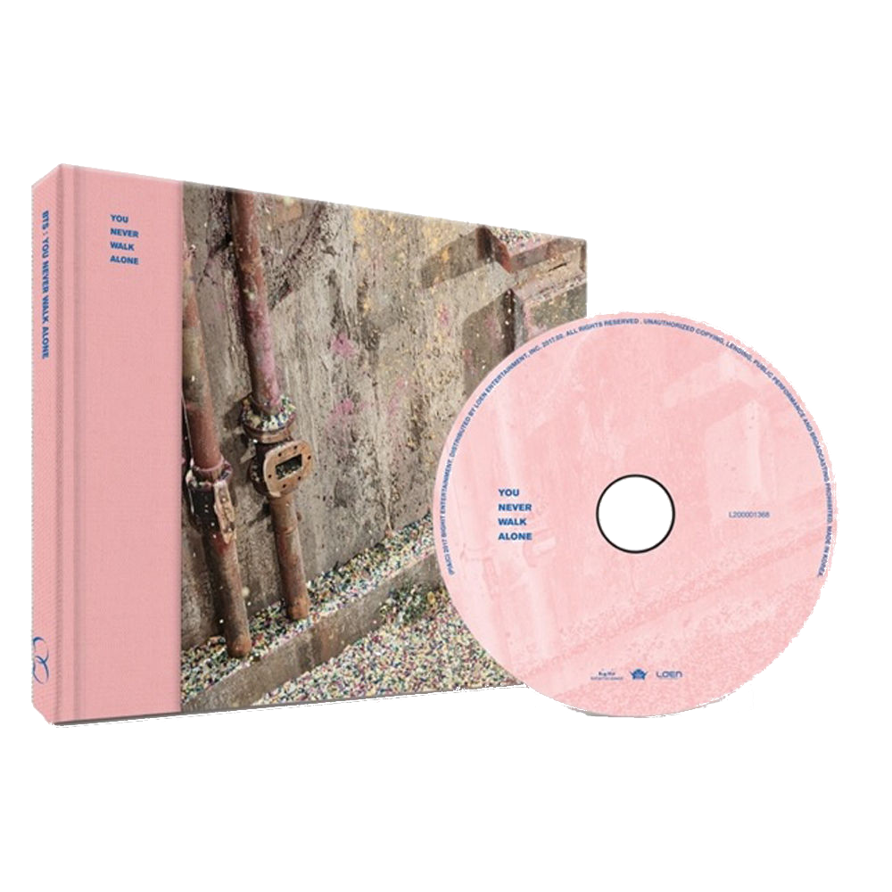
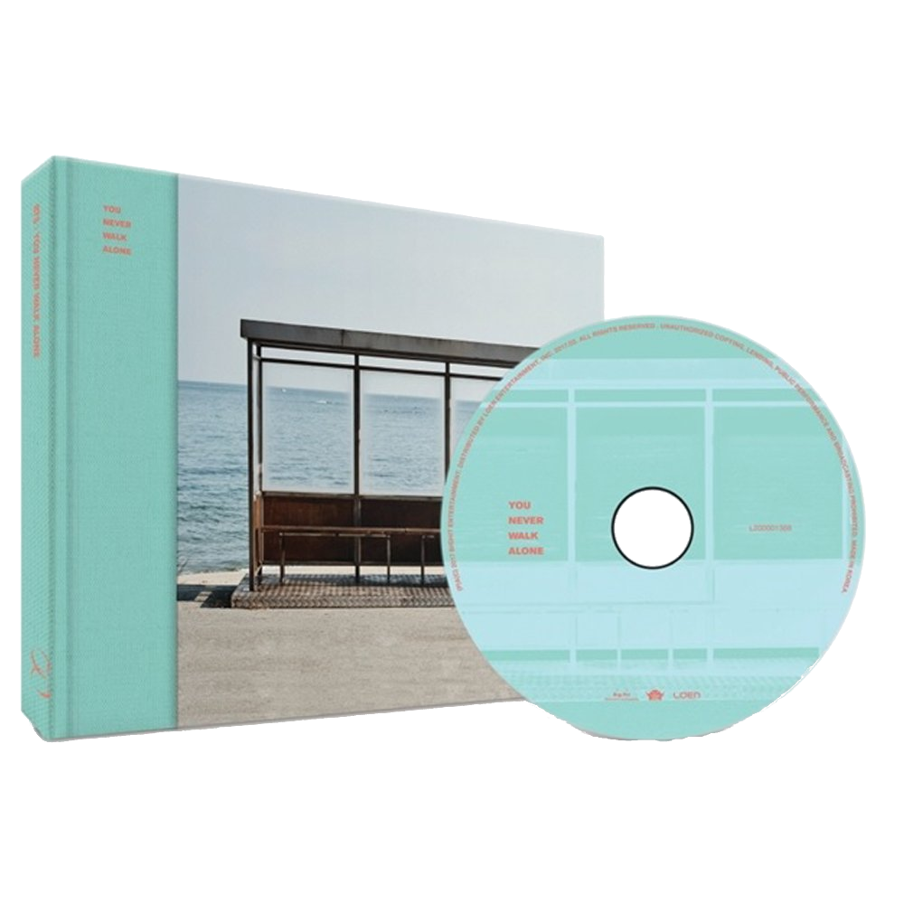

You never Walk alone est une réédition de l'album WINGS des BTS. Sortit le sous le label de Big Hit Entertainment. Cet album, contenant un cd et un photobook de 120 pages, est composé de 18 chansons soit 15 chansons provenant de l'album WINGS et 3 chansons inédites. La durée totale du CD de cet album est de 65 min et 58 s. Cet album est disponible en deux versions: left et right. Les chansons disponibles sur cet album ne varient pas selon la version, seul le disign et le photobook disponible dans l'album changent. Une photocard aléatoire parmi 8 modèle est fourni lors de l'achat de Wings:YNWA
 Cette chanson, écrite par Rap Monster, J-Hope et Pdogg, est interprétée par J-Hope.Ce dernier ayant également réalisé un clip vidéo de cette chanson.
Boy meets Evil est une chanson étonnante dont les paroles parlent de déception amoureuses sans pour autant tomber dans le cliché. En effet, dans ses paroles, la chanson compare l'amour au diable, qui nous attire et nous incite à le suivre avant de nous détruire et de nous faire souffrire. Ainsi, tout au long de la chanson, J-hope tente de résister à cette tentation de rejoindre le diable. Cependant, il ne peut lui resister et se rapproche inlassablement de celui-ci. Cette personification de l'amour refléter par le diable et la mélodie jouée par les instruments donnent un côté extrêmement sombre et étrange à la chanson.
En effet, le piano et la guitare s'associent avec la basse tout au long de la musique randant la chanson dramatique et angoissante. L'auditeur ressent de l'angoisse et un sentiment de solitude tout au long de la chanson. Boy meets Evil apparait comme une chanson étrange et troublante, presque surréaliste. La basse donne une dimension sombre et irrationnel à la chanson, permettant ainsi de capter l'attention de l'auditeur. Cette sensation est renforcer par le rap de J-Hope, qui passe d'un rap puissant et audacieux à des chuchotements tordus et déformés. Sur la fin de la chanson, la musique semble déformée et la voix de J-hope se fait de plus en plus basse, jusqu'à s'éteindre complètement. On peut alors encore entendre l'écho de la guitare résonner, marquant la fin de la chanson, mais seulement le début de l'album.
Cette chanson, écrite par Pdogg, Rap Monster, Suga, J-Hope, "Hitman" Bang et Kim Do-hoon, est interprétée par le groupe bts au complet. Cette chanson possède un clip vidéo. Les paroles de la chanson ont été fortement inspirée du livre Demian d'Hermann Hesse. On peut donc s'attendre à ce que cette chanson suive l'introduction de l'album et soit elle aussi sombre. C'est pourquoi on peut être surpris lors du début de la chanson.
En effet, le début de la chanson, réalisé par Jimin et est à la fois troublant et déstabilisant. L'auditeur se retrouve immédiatement happé par la chanson et celle-ci s'enchaîne de façon très fluide. Les parties rappées et celles chantées alternent et s'enchaînent parfaitement, bien dosées. Puis vient la deuxième intervention de J-Hope, qui, accompagné d'un changement de mélodie, casse le rythme présent de la chanson pour en imposer un autre, plus dynamique. C'est une prise de risque sur laquelle font généralement l'impasse la plupart des chansons kpop gentillettes et qui rend le morceau mémorable et original.
Les paroles de la chansons décrivent une jeunesse, personnifié ici par Jin, tenté par la corromption. On y retrouve énormément de référence biblique et de mythe, qui permettent à la fois de dynamiser la chanson et de lui donner un côté plus philosophique. On y retrouve en effet le mythe d'Icare et de Dédale, une représentation de Michelangelo, ou encore plusieurs apparitions de pommes, symbole du péché dans l'histoire biblique
Cette chanson parle donc, au travers de ses références bibliques, de la tentation. Elle nous montre également que personne n'est à l'abri des tentations, comme on peut le voir grâce à la représentation de l'ange déchu, devenant alors démon à la fin de la chanson.
Cette chanson, écrite par Tony Esterly, David Quinones et Rap Monster, est interprétée par Jungkook. Cette chanson ne possède pas de clip vidéo mais possède un mini film qui sert d'introduction à la chanson.
Le mini film nous rappelle en effet les paroles du début de la chanson dans lesquelles Jungkook dépeint une enfance passé seul, sans amis. En effet, Jungkook était auparavant un garçon extrémement timide et réservé. Etant le plus jeune du groupe, cette timidité n'était que plus renforcé lors de leurs début. Il a aujourd'hui réussit à vaincre cette forte timidité en grande partie grâce aux autres membres du groupe, qui l'ont fortement aidé à s'affirmer et à s'ouvrir. Jungkook à donc décidé de réaliser cette chanson afin de les remercier. Il s'adresse donc à ses ainés tout au long de cette ballade dont les paroles souligne sa croissance à la fois en tant qu'individu et en tant que chanteur.
Cette chanson, écrite par Docskim, Sumin, "Hitman Bang, Jimin et Pdogg, est interprétée par Jimin. Elle ne possège pas de clip vidéo mais possède un mini film qui sert d'introduction à la chanson.
Que ce soit dans le mini film ou dans les paroles de la chanson, Jimin semble se perdre entre le rêve et la réalité. Il ne distingue plus le vrai du faux et se ment à lui-même. Il est piégé dans ses mensonges et n'arrive plus à en sortit. Sur cette chanson, Jimin est accompagner essentiellement de violon, de basse et de percussion le tout donnant un étrange mélange de calme et de dynamisme à la chanson. L'auditeur se retrouve alors comme envouté par la chanson tout comme Jimin s'est retrouvé, dans les paroles, envouté par ses mensonges.
Cette chanson, écrite par Philtre, Slow Rabbit, "Hitman Bang, V et Sonnim, est interprétée par V. Elle ne possège pas de clip vidéo mais possède un mini film qui sert d'introduction à la chanson.
Dans cette chanson, V présente ses excuses à son frère et sa soeur. En effet, étant donné son activité de chanteur, il ne vois que très peu sa famille et ne peut donc pas soutenir son frère et sa soeur comme devrait le faire un grand frère. Il s'en excuse pour cela dans cette chanson en comparant cette abscence à un crime. La chanson suis cette idée apporté par les paroles: elle est très calme, bien que devenant plus dynamique par moment, et il n'y a que peut d'instrument qui accompagne V dans son chant.
Cette chanson, écrite par Miss Kay et Suga, est interprétée par Suga. Elle ne possège pas de clip vidéo mais possède un mini film qui sert d'introduction à la chanson.
Dans First love, Suga ne parle pas d'amour mais de sa passion pour le piano. Il raconte son enfance par ce biais puisqu'il a commencé le piano très tôt et de manière presque obsessive. Sur un rap commençant très calmement et s'intensifiant au petit à petit, Suga nous livre tout ses ressentit sur cet amour du piano mais également les moments difficiles durant lesquels il ne pouvais trouver du réconfort qu'auprès de son piano. Suga à d'ailleurs pleuré lors de l'enregistrementde cette chanson. Durant tout le long de la chanson ,divers instruments accompagne le rap de Suga, mais seul le piano est présent du début à la fin de la piste.
Cette chanson, écrite par Slow Rabbit et Rap Monster, est interprétée par Rap Monster. Elle ne possège pas de clip vidéo mais possède un mini film qui sert d'introduction à la chanson.
Dans un rap calme et posé, Rap Monster décrit ce qu'il fait lorsqu'il est en manque d'inspiration pour écrire ses chansopns ou lorsqu'il n'arrive pas à penser à autre chose qu'a ses problèmes. Dans cette chanson, il parle donc de ses moment de toute et d'intense réflexion sur lui même, pour lesquels il se rend généralement à la gare de Ttukseom, et le monde qui l'entoure, chose qui lui permet bien souvent de retrouver de l'inspiration lorsqu'il en manque.
Cette chanson, écrite par Primary, Pdogg et J-Hope, est interprétée par J-Hope. Elle ne possège pas de clip vidéo mais possède un mini film qui sert d'introduction à la chanson.
Bien que son père n'approuvait pas toujours son parcours, la mère de J-Hope à toujours soutenu son fils. Au travers de cette chanson, J-Hope remercie sa mère du soutiens qu'elle lui à apporté depuis qu'il est enfant. Il doit beaucoup à sa mère car elle l'a poussé à ne pas abandonner ses rêves. Dans un étonnant mélange de joie et de tristesse, J-Hope réussit à nous transmettre tout l'amour d'un fils à sa mère mais égalment d'une mère à son fils.
Cette chanson, écrite par Slow Rabbit, Pdogg, J-Hope, June, Rap Monster, "Hitman" Bang et Jin, est interprétée par Jin. Elle ne possède pas de clip vidéo mais possède un mini film qui sert d'introduction à la chanson.
Etant le visuel du groupe, Jin n'était pas toujours mit en valeurs dans les chansons du groupe. Il avait donc parfois l'impression de ne pas être reconnu pour son chant et donc, de ne pas pouvoir suivre ses rêves. Awake parle de ses doutes quand à cela ainsi que de son rêve de progresser et de s'élever grâce à son chant. La musique est quand à elle extrêmement envoutante. La voix de Jin semble flotter avant de s'envoler dans le refrain, faisant écho au sens des paroles.
Cette chanson, écrite par Pdogg, Supreme Boi, Peter Ibsen, Richard Rawson, lee Paul Milliams, Rap Monster et June, est interprétée par les chanteurs du groupe. Elle ne possède pas de clip vidéo.
Lost est une chanson dans laquelle les chanteurs de bts expriment les doutes qu'ils ont pu avoir tout au long de leur vie. Elle parle principalement de leurs peur d'échouer en à atteindre leur rêve et des doutes que cette peur à engendré. La musique est quand à elle douce et dynamique et possède un caractère joyeux, montrant ainsi à l'auditeur que malgré leurs doutes, ils continuent à avancer.
Cette chanson, écrite par Chris 'Ticky' Stewart, Medor J. Pierre, Rap Monster, J-Hope et Suga, est interprétée par les rappeur du groupe. Elle ne possède pas de clip vidéo
Sur un rap extremement dynamique et débordant d'énergie, Suga, Rap Monster et J-Hope offrent à leur auditeur une musique débordant de sarcasme et d'ironie. Ils s'adresse dans ce rap principalement aux personnes qui les détestent et montrent par leurs rap sarcastique qu'ils ne sont pas affecté par les critiques haineuses qui leurs sont adressé.
Cette Chanson, écrite par Keb' Mo', Sam Klempner, James Reynolds, Josh Wilkinson, Rap Monster, Supreme Boi, Gaeko, Pdogg et Adora, est interprétée par le groupe bts au complet. Elle ne possède pas de clip vidéo
Dans le monde d'aujourd'hui, le terrorisme est présent sur l'ensemble de la planète, les personnes sont égoïstent et n'aident pas les autres dans le besoin, Les Hommes possèdent des armes comme la bombe atomique, pouvant mener tout le monde à sa perte. L'Homme est voué à se détruire lui même, on peut donc se demander si le monde ne devient pas fou. C'est la question que ce pose le groupe à travers cette chanson dans laquelle ils dénoncent ces défaults dans le monde.
Cette chanson, écrite par Pdogg, "hitman" Bang, Supreme Boi et Rap Monster, est interprétée par le groupe bts au complet. Elle ne possède pas de clip vidéo
Au travers de cette chanson, les bts apportent leurs soutiens à la cause de l'égalité hommes/femmes. En effet,sSur une musique dynamique et entrainante, elle insite les femmes à s'affirmer et à ne pas se rabaisser dans la vie quotidienne. Les bts encourage notamment les femmes à s'exprimer et à ne pas douter d'elles même.
Cette Chanson, écrite par Slow Rabbit, Pdogg, "hitman" Bang, Rap Monster, J-Hope et Suga, est interprétée par le groupe bts au complet. Elle ne possède pas de clip vidéo
Sur une musique calme et envoutante, cette chanson nous rappelle que pour chaque moment difficile, des moments meilleurs arriveront. Le message que veulent faire passer les bts dans cette chanson est clair: Il faut savoir attendre et apprécier les bon moments
Cette Chanson, écrite par Adora, Pdogg, Bang Sihyuk, Rap Monster, Arlissa Ruppert, Peter Ibsen et Suga, est interprétée par le groupe bts au complet. Elle possède un clip vidéo.
Inspirée du livre Tho ones Who Walk Away from Omelas écrit par Ursula K. Le Guin et d'écrits du philosophe Nietzsche, Spring Day est une représentation même du printemps et de la résurection. Losque l'hiver laisse place au printemps, le paysage se remplit de nouvelles vie et de nouvelles histoires commences. Au traverse de cette chanson calme et envoutante, bts laissent penser qu'ils sont arrivé au printemps de leur carrière.
Cette Chanson, écrite par June, Pdogg, Bang Sihyuk, Rap Monster et Supreme Boi, est interprétée par le groupe bts au complet. Elle possède un clip vidéo.
Not Today est une chanson très prenente et dynamique. Contrairement à d'autre chansons qui ont des paroles profondes, celle-ci est plus acceccible aux amateurs ou aux non-fans. Le rythme est entrainant et le visuel du clip très beau, incitant l'auditeur à continuer de l'écouter jusqu'a la fin.
Cette Chanson, écrite par Pdogg, Adora, Rap Monster, Suga et J-Hope est interprétée par le groupe bts au complet. Elle ne possède pas de clip vidéo.
Faisant référence au titre de l'album, cette chanson calme et décontractante sert de fermeture à l'album wings. Elle exprime les objectif atteint du groupe dans leur carrière mais est surtout présente pour rappeler que le groupe a pour volonté de continuer de grandir en popularité et de s'élever dans les classements.
Cette Chanson, écrite par Pdogg, Bang Sihyuk, Supreme Boi, Rap Monster, Suga et J-Hope est interprétée par le groupe bts au complet. Elle ne possède pas de clip vidéo.
Faisant référence au titre de l'album, cette chanson est un complément à l'ensemble de celui-ci et arrive donc après l'outro. A travers cette chanson extremement calme, bts vaut faire passé le message que même quelqu'un de solitaire n'est pas complétement seul.
| rôle dans la création de l'album | noms | nom du studio |
|---|---|---|
| ingénieur d'enregistrement | Pdogg | Dogg Bounce |
| Slow Rabbit | Carrot Express | |
| Supreme Boi | The Supreme Escape | |
| JUNE | Imagine World | |
| Yang Ga, Jung Woo-Yeong | Big Hit Studio | |
| RM | Mon Studio | |
| Suga | Genius Lab | |
| J-hope | Hope World | |
| Docskim | Hoodcave | |
| adora | Adorable Trap | |
| Sam Klempner | Schmuzik Studio in London | |
| Peter Ibsen | Sky Studios | |
| No Yang-Soo, Baek Gyeong-Hoon | Studio T | |
| ingénieur de masterisation | Alex Deyoung | deyoung master |
| producteur exécutif | "hitman" bang | aucun |
| superviseur exécutif | Nine Choi | |
| directeur en chef de la gestion | Kim Sin-Kyu | |
| équipe de gestion | Song Ho-Peom, Kim Sae-Jin, Lee Sung-Seok, Lee Jung-eel, Kim Yoon-Jae, Park Soon-Hak, Oh Gwang-Taek | |
| directeur en chef de la production et du commerce | Lenzo Yoon | |
| équipe commerciale | Park Woo-Jung, Kim soo-lin, In Na-yeob, Kil Hyeon-Jee, Kim Boon-hong | |
| équipe de négociation des partenariats | Dre Park, Gang Gyeong-Jin, Bae Song-ho, Sin Hyo-Jin | |
| directeur en chef de la communication | Chae eun | |
| communication avec le publique | Lee Seul, Lee Yoo-Ree, Jo Lee, Park Onnu-Lee | |
| Directeur en chef du comerce à l'échelle mondiale | Lee Hyeok | |
| équipe chargée des finances | Hong Hyeog-Gi, Lee Eun-Jong, Gweon Eun-Sang, | |
| équipe de support de gestion | Lim Jae-dong, Kim Jung-ook, Jee Jun-Soo | |
| Producteur | Pdogg | |
| Co-producteur | "hitman" bang | |
| directeur de la création visuelle | Kim Song-Hyeon | |
| équipe de création visuelle | Lee Hyeon-Joo, Lee Seon-Gyeong, Gabriel Cho | |
| Directeur des prestations | Son Seong-Deuk | |
| Prestations | Lee Ga-Heon | |
| Photo | Kim Hyeong-Sin | |
| MV | Lumpens, GDW | |
| Distribution | Loen | |
| art work | Studio XXX | |
| conception de symbole | Kim Cheol-Hwee | |
| impression | JS company | |
| chanteurs, danseurs | Jungkook, Jimin, V, J-Hope, Suga, RM, Jin |
album physique